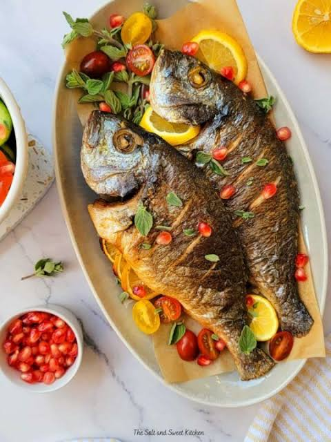

Fish dishes represent a remarkably diverse and health-conscious culinary tradition celebrated across global cultures, praised both for their rich omega-3 fatty acids and their culinary versatility. Coastal traditions span from vibrant, citrus-cured Latin American Ceviche to hearty, comforting bowls of European Bouillabaisse and delicate Japanese Sushi or Sashimi
TIn East Africa, regional staples like Tanzania's aromatic Samaki wa Kupaka (fish coated in a spiced coconut sauce) highlight how local spices and rich, creamy textures elevate fresh catches. Whether a dish features flaky white fish lightly braised with Mediterranean tomatoes and garlic, a beautifully crisped whole BBQ changu, or a deeply flavorful coconut curry, preparing fish offers endless possibilities that can transform simple, fresh ingredients into a masterclass of flavor in just a matter of minutes.